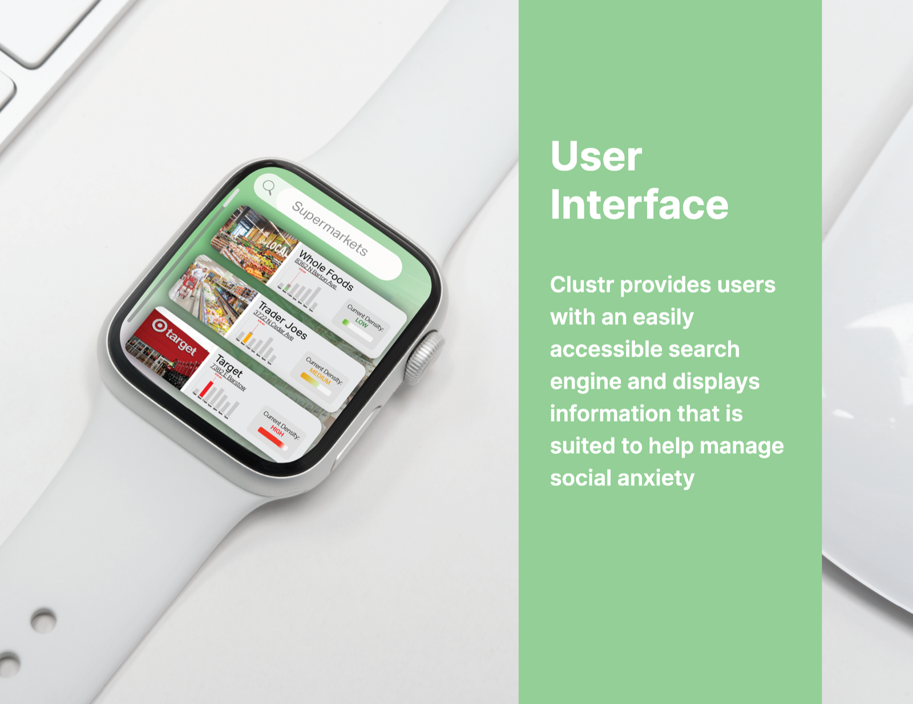
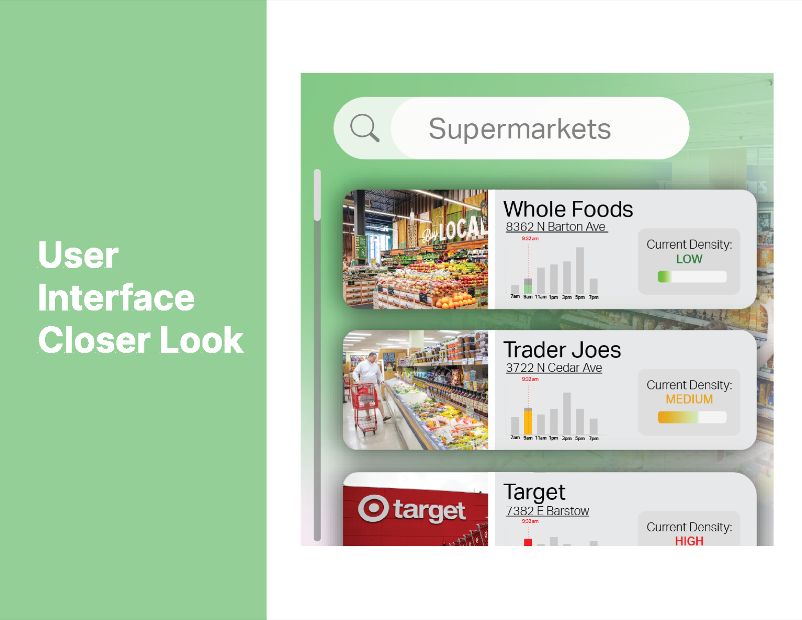
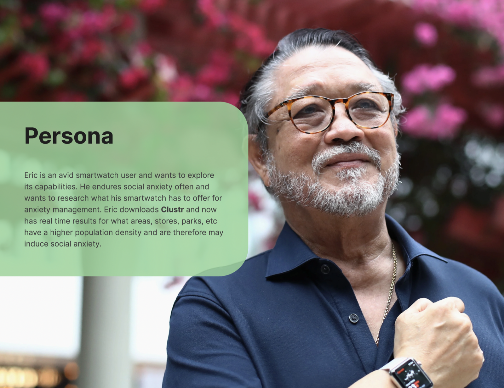

Clustr
A UI concept that helps people with social anxiety navigate and avoid densely crowded areas in their daily lives.

Clustr is a smartwatch-first concept supporting individuals facing medical or mental-health challenges in daily life. The goal was to build a UI that gives users real-time crowd-density information, so they can navigate around busy places and better manage social anxiety.
The Problem
For someone who experiences social anxiety, crowded spaces can be overwhelming. Clustr surfaces live density levels for nearby places so users can plan calmer routes and visits — turning an unknown into something they can see and decide around before they leave home.


User Interface
Designed for the smartwatch, Clustr provides an easily accessible search engine and displays information tailored to help manage social anxiety. Real-time density indicators for supermarkets, stores, parks, and more let users choose where and when to go with confidence.
Persona
Eric is an avid smartwatch user who often experiences social anxiety and wants to research what his device can offer for anxiety management. With Clustr, he gets real-time results for the population density of areas, stores, and parks — helping him avoid the places most likely to feel overwhelming.
